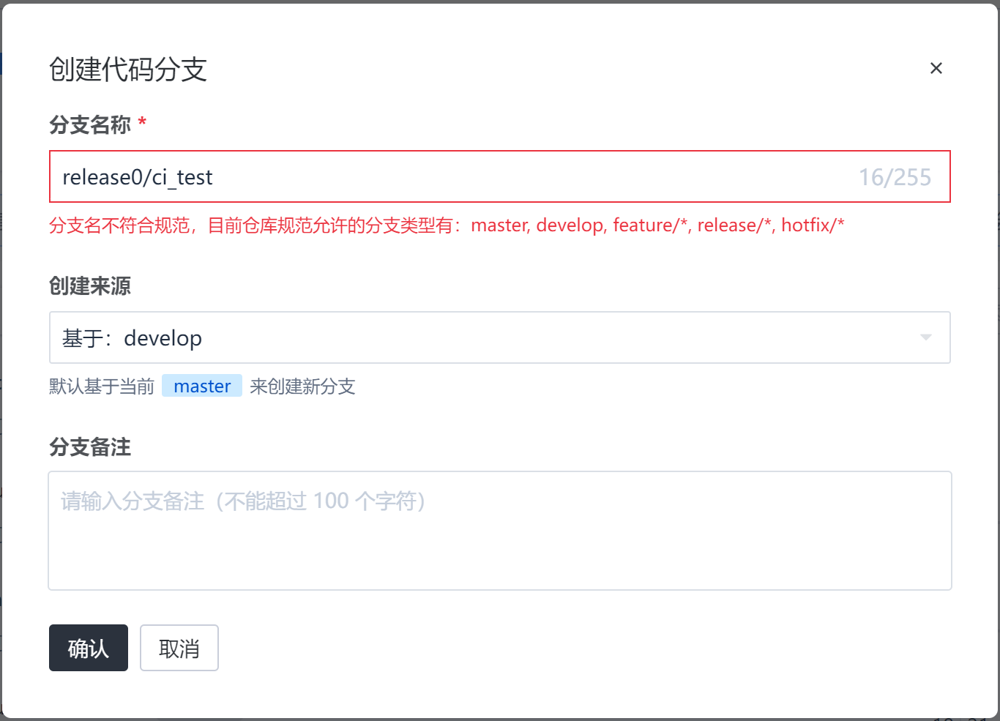
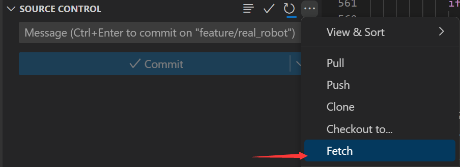
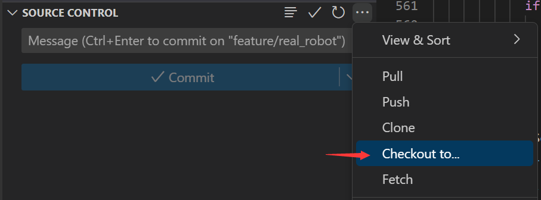
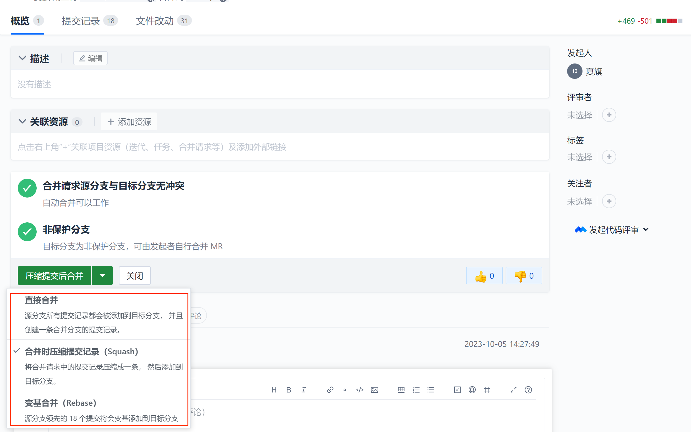
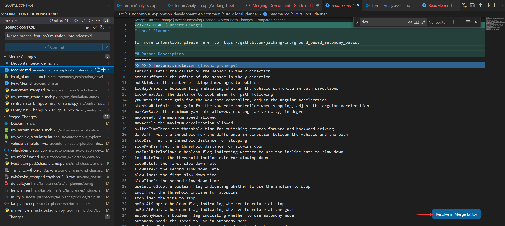
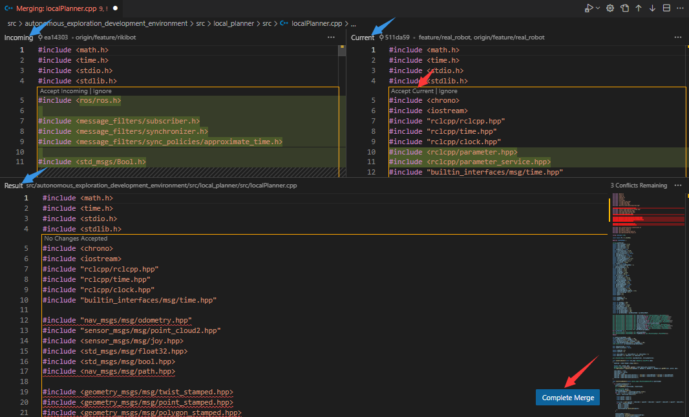
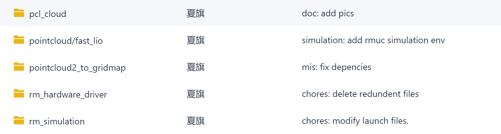
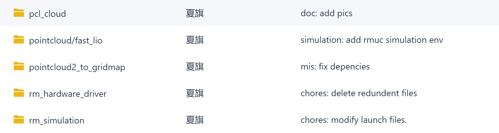

开发的姿势¶
Why¶
实现并行开发
方便管理
不能避免BUG，但方便找到BUG
分支命名规范(Gitflow)¶
master 分支¶
master 为主分支，也是用于部署生产环境的分支，确保master分支稳定性
master 分支一般由realese以及hotfix分支合并，任何时间都不能直接修改代码
develop 分支¶
develop 为开发分支，始终保持最新完成以及bug修复后的代码
一般开发的新功能时，feature分支都是基于develop分支下创建的
对代码进行持续集成也一般在这个分支上进行
feature 分支¶
开发新功能时，以develop为基础创建feature分支
分支命名: feature/ 开头的为特性分支， 命名规则: feature/user_module、 feature/cart_module
release分支¶
release 为预上线分支，发布提测阶段，会release分支代码为基准提测
当有一组feature开发完成，首先会合并到develop分支，进入提测时，会创建release分支。如果测试过程中若存在bug需要修复，则直接由开发者在release分支修复并提交。当测试完成之后，合并release分支到master和develop分支，此时master为最新代码，用作上线。
hotfix 分支¶
分支命名: hotfix/ 开头的为修复分支，它的命名规则与 feature 分支类似
线上出现紧急问题时，需要及时修复，以master分支为基线，创建hotfix分支，修复完成后，需要合并到master分支和develop分支

举栗子🌰🌰🌰¶
增加新功能¶
在coding上创建分支
fetch分支到本地
git fetch切换到新建的分支
git checkout feature/xxx
开发
(feature/xxx)$: blabla # 开发 (feature/xxx)$: blabla_test # 测试 (feature/xxx)$: git add xxx (feature/xxx)$: git commit -m 'commit comment' (feature/xxx)$: git push origin feature/xxx # 提交到远程仓库
合并到develop分支，也就是提pull request(merge request)
开发人员
在Coding上发起pull request
注意合并方向规范

填写pull request的标题和内容

合并方式选择squash
🫠选择哪一个方式好像关系也不大 🌟Squash 可以将多个提交合并为一个单独的提交，使项目的提交历史更加干净。 🌟Rebase 则可以将一个分支上的提交应用到另一个分支上，使得项目历史更加线性和整洁。
记得添加评审者
处理冲突
若没有冲突，等待评审完成即可，develop分支的内容就会更新为feature分支的内容
若有冲突，需要解决冲突，再合并

在VsCode处理冲突
 提交到远程仓库
git push origin feature/xxxx
等待测试/评审
评审人员/项目经理
{kind=link}
{kind=link}
{kind=link}
{kind=link}
{kind=link}
{kind=link}
{kind=link}
{kind=link}
{kind=link}
修复紧急bug¶
(master)$: git checkout -b hotfix/xxx # 从master建立hotfix分支
(hotfix/xxx)$: blabla # 开发
(hotfix/xxx)$: git add xxx
(hotfix/xxx)$: git commit -m 'commit comment'
(master)$: git merge hotfix/xxx --no-ff # 把hotfix分支合并到master，并上线到生产环境
(dev)$: git merge hotfix/xxx --no-ff # 把hotfix分支合并到dev，同步代码
测试环境代码¶
(release)$: git merge dev --no-ff # 把dev分支合并到release，然后在测试环境拉取并测试
生产环境上线¶
(master)$: git merge release --no-ff # 把release测试好的代码合并到master，运维人员操作
(master)$: git tag -a v0.1 -m '部署包版本名' #给版本命名，打Tag
日志规范¶
在一个团队协作的项目中，开发人员需要经常提交一些代码去修复bug或者实现新的feature。而项目中的文件和实现什么功能、解决什么问题都会渐渐淡忘，最后需要浪费时间去阅读代码。但是好的日志规范commit messages编写有帮助到我们，它也反映了一个开发人员是否是良好的协作者。
编写良好的Commit messages可以达到3个重要的目的：
加快review的流程
帮助我们编写良好的版本发布日志
让之后的维护者了解代码里出现特定变化和feature被添加的原因
目前，社区有多种 Commit message 的写法规范。来自Angular 规范是目前使用最广的写法，比较合理和系统化。
Commit message 格式¶
具体格式为:
<type>[(scope)]: <subject>
<BLANK LINE>
<body>
<BLANK LINE>
<footer>
type: 本次 commit 的类型，诸如 bugfix docs style 等
scope[optional]: 本次 commit 波及的范围
subject: 简明扼要的阐述下本次 commit 的主旨
body: 在主体内容中我们需要把本次 commit 详细的描述一下
footer: 描述下与之关联的 issue 或标明 break change
Type的类别说明¶
feat: 添加新特性
fix: 修复bug
docs: 仅仅修改了文档
style: 仅仅修改了空格、格式缩进、都好等等，不改变代码逻辑
refactor: 代码重构，没有加新功能或者修复bug
perf: 增加代码进行性能测试
test: 增加测试用例
chore: 改变构建流程、或者增加依赖库、工具等
TIS：对Commit分类¶
 

{kind=link}
关联仓库的管理¶
涉及内部仓库之间的引用采用 submodule 进行版本管理
将引用项目作为submodule添加到主项目中：
# 添加submodule
git submodule add <远程引用模块仓库地址>
子项目版本管理和主项目版本管理是分发的，主项目中的子项目更新需要手动操作：
# 更新子模块
git submodule update --init